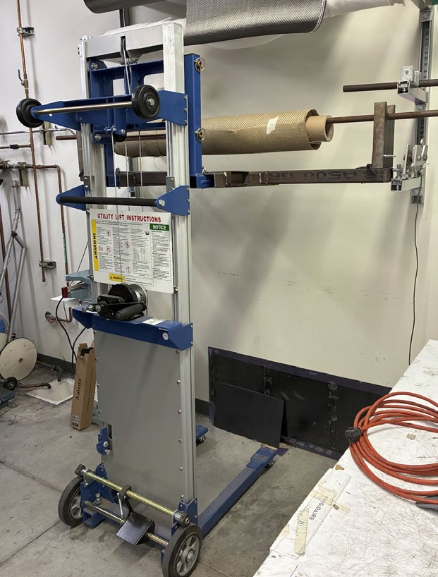

Dolly interaction
The attachment successfully retrieved and replaced representative roll rods across the planned height test sequence.
Dolly tip test
The dolly remained stable while rolling over representative obstacles under the test setup.
Manufacturing check
Two functional latches and the dolly attachment were produced and assembled within the verification plan.
Manual latch retention
The roll remained retained unless the latch was intentionally disengaged.
What the testing showed
Most verification activities successfully demonstrated that the system could retain and retrieve representative composite roll loads while reducing the need for ladder use. Floor alignment guides improved retrieval repeatability, and the foldable cradle made the dolly attachment easier to handle and store.
Primary limitation found
Full-height testing exposed a clearance conflict between the dolly attachment and the existing rack geometry. The report recommends narrowing the attachment by about 0.5 in on each side to improve maneuverability and avoid interference.
This is exactly the kind of issue a verification prototype is meant to uncover: the underlying retrieval concept worked, but the final installed geometry needs another refinement cycle.

Final outcome
The Composite Carrier demonstrated the feasibility of a safer, mechanically simple roll-retrieval system. The prototype met the majority of the project’s engineering specifications and identified a clear next design improvement for full-height rack operation.